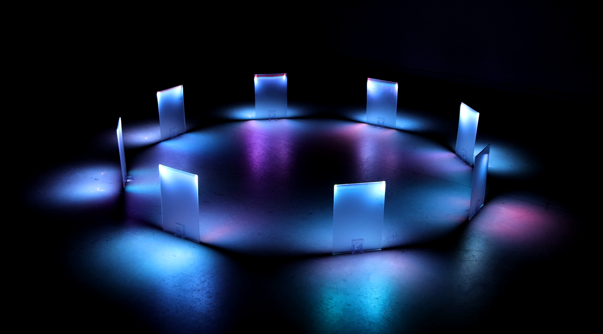
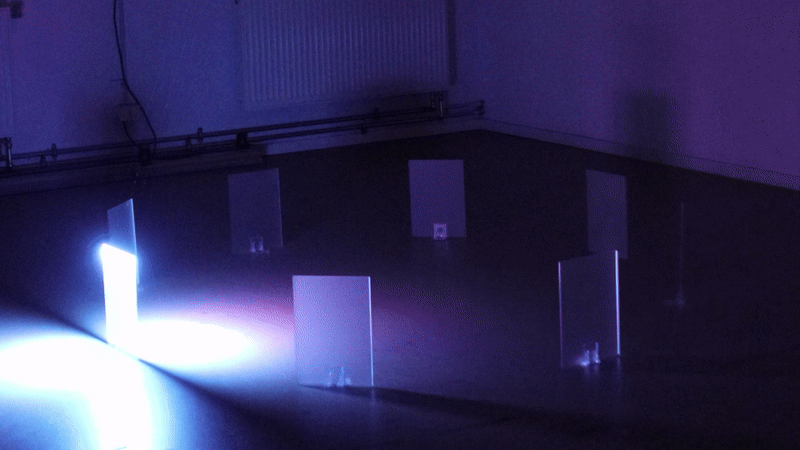
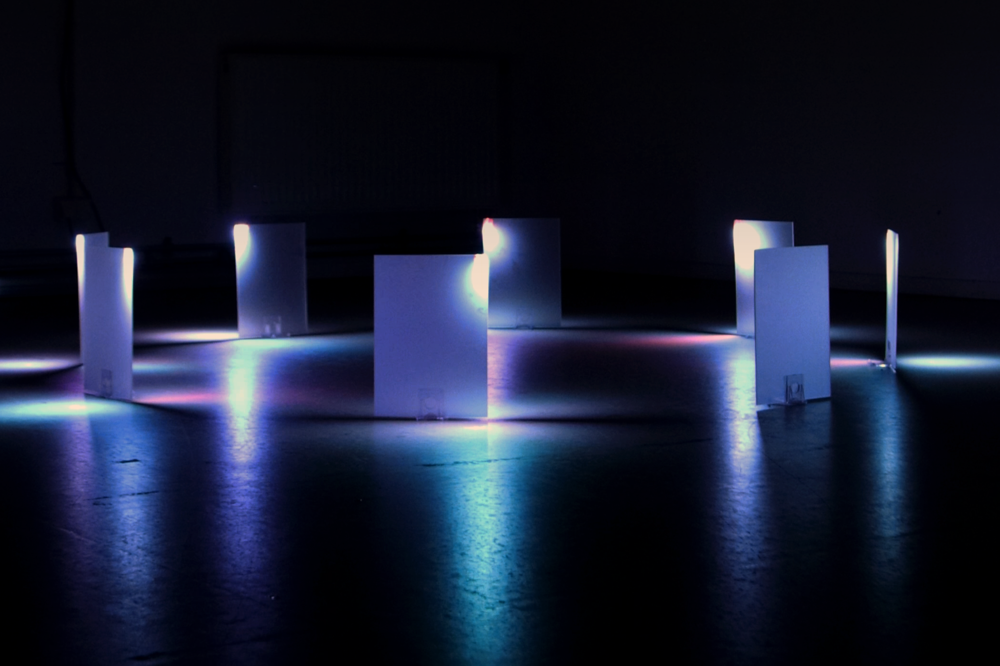
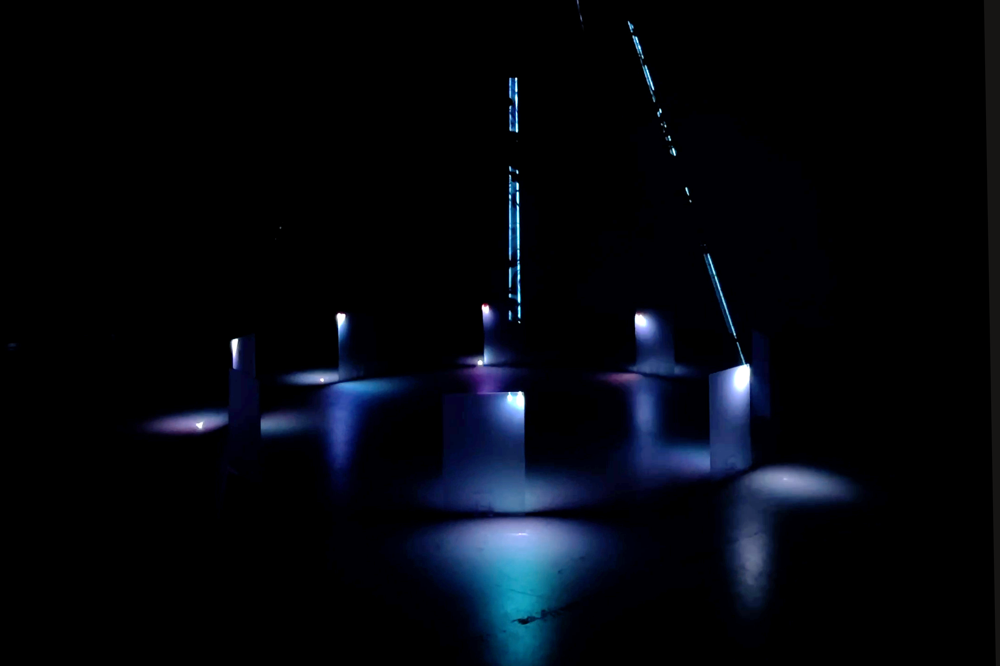
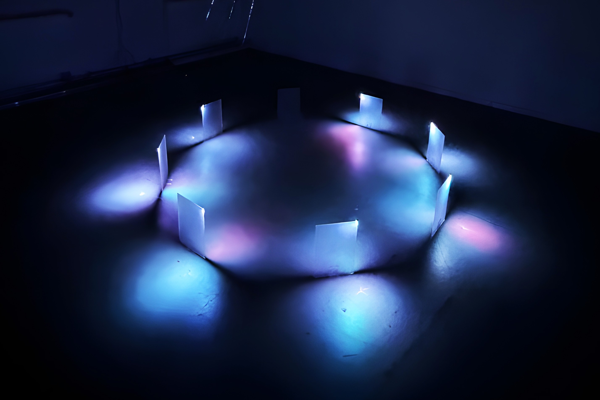
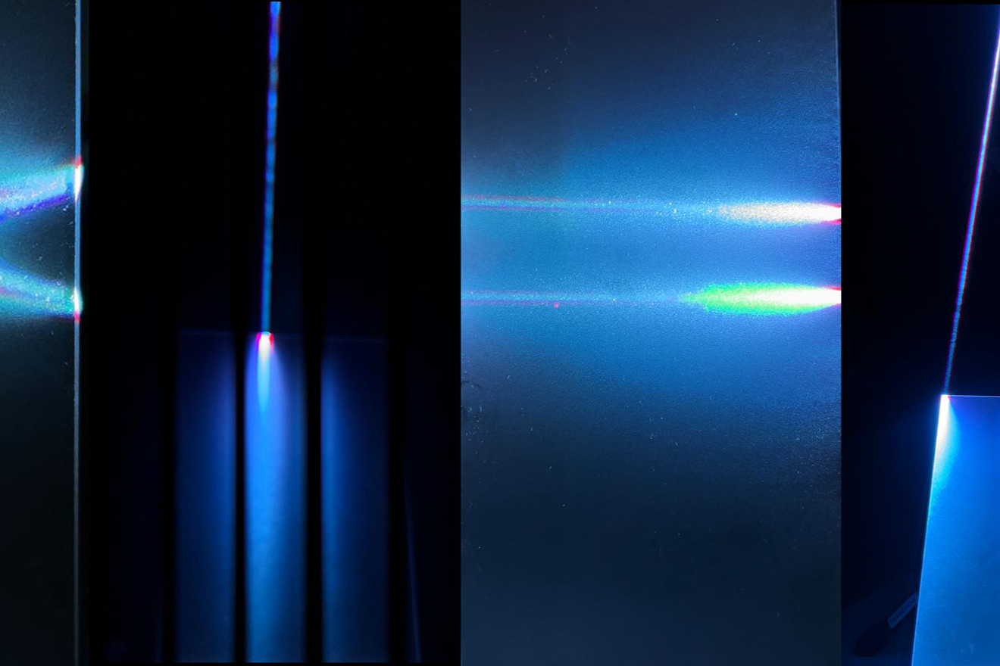
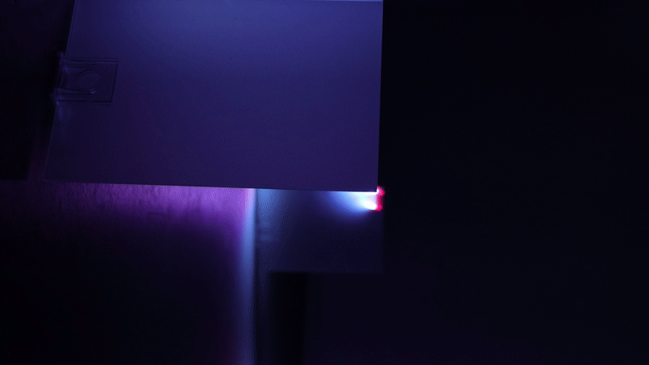

The Semiotics of Light
The Altar is a scenographic lighting installation that explores the intersection of perception, sanctity, immersion and identity within contemporary digital culture. Drawing on the theoretical concept of light as an interface that organises emotional systems rather than mere information, the piece poses a fundamental question:
'In what do we immerse ourselves today, and in what do we place our faith?
The installation comprises flexiglass panels arranged in a circle on the floor. A high-precision overhead laser source strikes the top edge of each panel with surgical accuracy, initiating a complex optical transformation. The light undergoes a dual metamorphosis: it creates a soft internal dispersion within the matte grain of the panels while simultaneously refracting and reflecting off the floor. This generates a secondary, shifting topography of light that distorts the viewer's perception of space.
When synthesised with atmospheric haze, the environment transforms into an immersive field of light and sensation. The light functions as a rhythmic and emotional interface, mediating a process of deep perceptual absorption and linear narrative. The installation unfolds as a continuous temporal loop, devoid of a fixed origin or endpoint, in which perception is perpetually reconstructed through the constant interplay of reflection, refraction, and kinetic presence.






